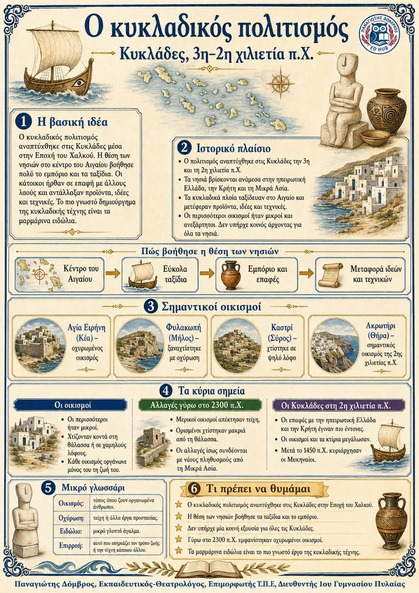

Πληροφοριογράφημα ενότητας
Το πληροφοριογράφημα αυτής της ενότητας δεν έχει ανέβει ακόμη. Οι σημειώσεις παραμένουν πλήρως διαθέσιμες.

Κεφάλαιο Β΄ · Κυκλάδες, 3η-2η χιλιετία π.Χ.
Ο κυκλαδικός πολιτισμός αναπτύχθηκε στα νησιά του Αιγαίου κατά την Εποχή του Χαλκού. Η θέση των Κυκλάδων βοήθησε τα θαλάσσια ταξίδια, το εμπόριο και την επικοινωνία με άλλες περιοχές. Οι πρώτοι οικισμοί ήταν μικροί και ανεξάρτητοι. Η τέχνη τους είναι γνωστή κυρίως για τα μαρμάρινα ειδώλια και τα όμορφα αγγεία.
Θέση ανάμεσα σε πολλές περιοχές ↓ Ταξίδια με πλοία ↓ Εμπόριο και επαφές ↓ Μεταφορά ιδεών και τεχνικών ↓ Ανάπτυξη του πολιτισμού
